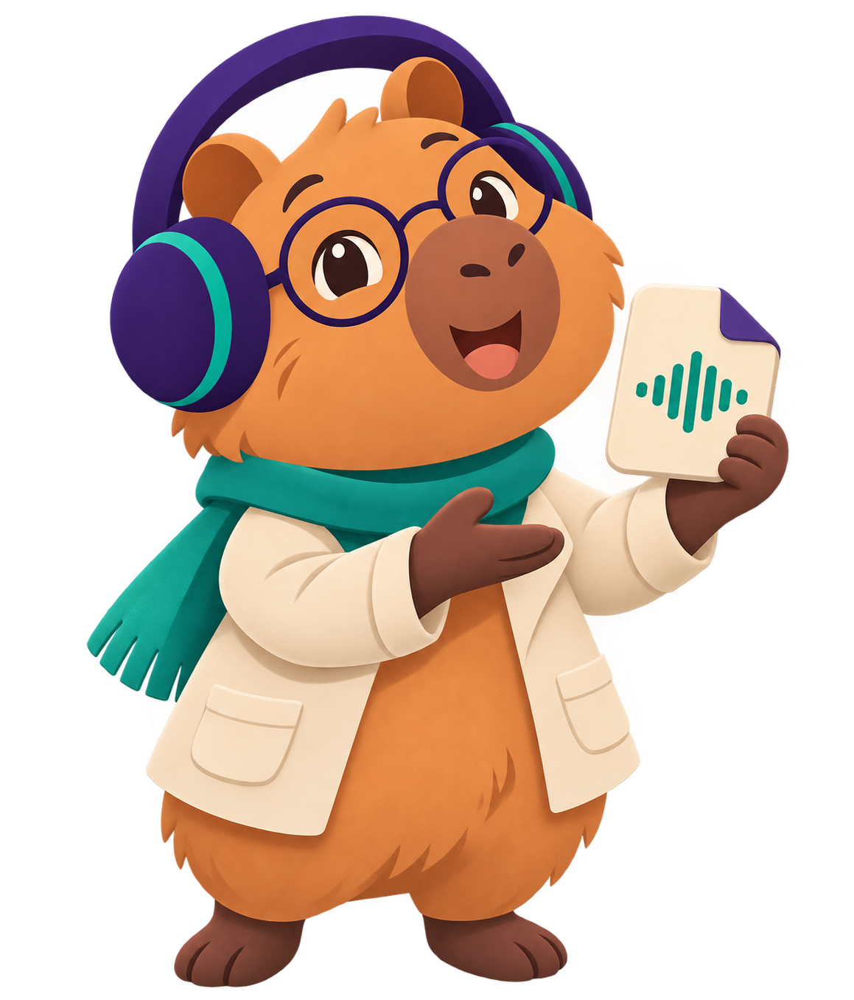
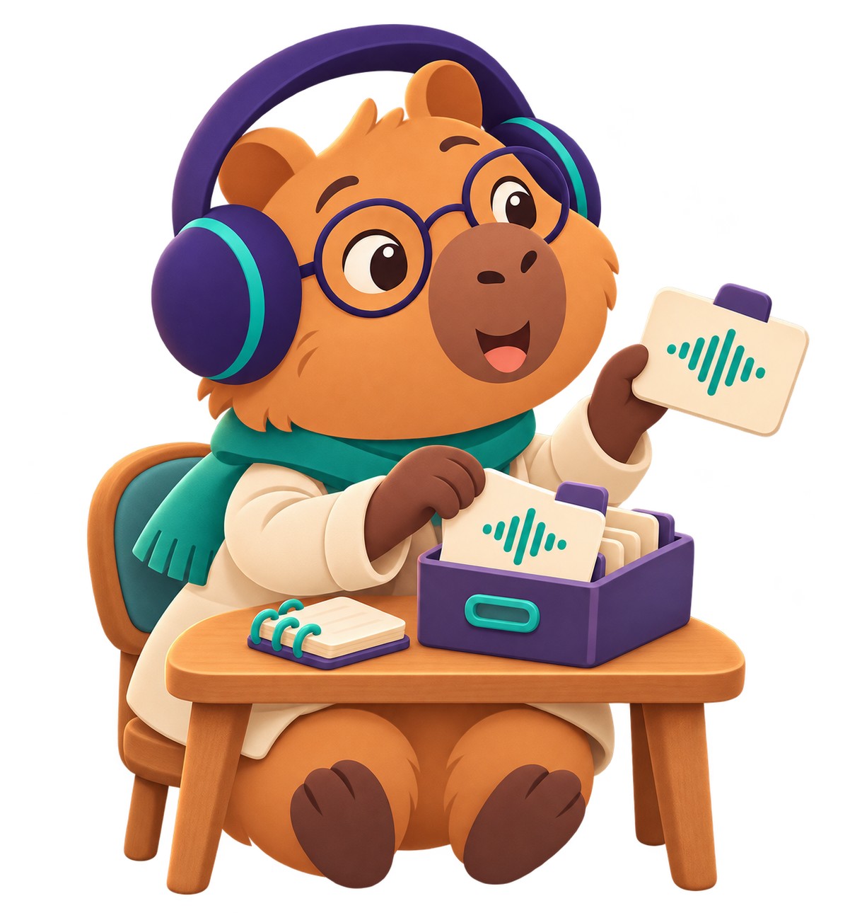
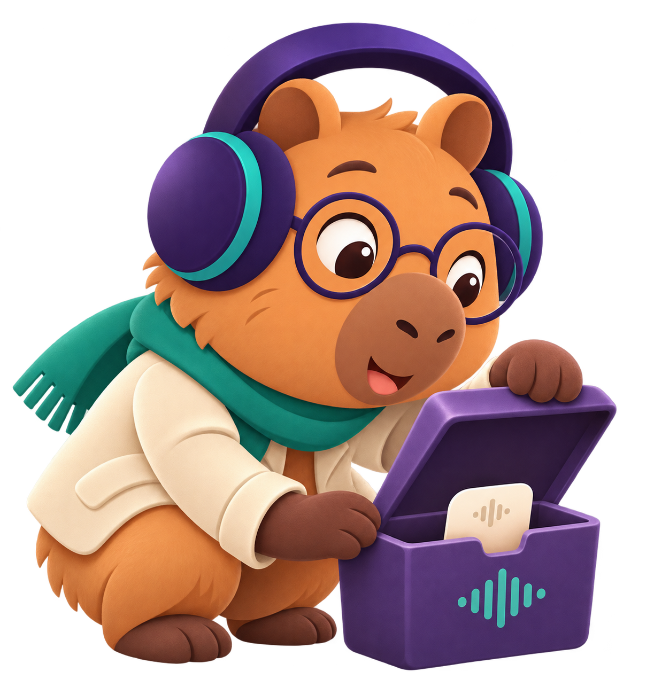

Prepare o arquivo
Comece com um arquivo WAV, o formato mais simples. Para MP3, MP4 e outros, instale também o FFmpeg, um conversor gratuito — a seção de download explica como.
O Verso transcreve entrevistas de graça no seu computador. Ouça o áudio enquanto revisa o texto e exporte a transcrição em RTF acadêmico, com formatação compatível com a ABNT NBR 14724.
Queria começar falando sobre as mudanças no bairro.
Nos últimos anos, o transporte ficou bem mais acessível.
E como isso mudou a sua rotina?

Um aplicativo de transcrição local, criado a partir de uma necessidade concreta de pesquisa.
O Verso surgiu para ajudar alunos de mestrado da USP a transcrever entrevistas sem custo e diretamente em seus computadores. A proposta é manter um fluxo acessível para ouvir, transcrever, conferir e organizar o material da pesquisa.
Projeto independente; a menção à USP descreve o contexto de criação, não um vínculo ou endosso institucional.

Você pode acompanhar o processamento na fila e voltar ao resultado para conferir cada trecho.
Comece com um arquivo WAV, o formato mais simples. Para MP3, MP4 e outros, instale também o FFmpeg, um conversor gratuito — a seção de download explica como.
Em Configurações, escolha o motor e o modelo ou perfil — compare as opções logo abaixo, em Motores. O modelo é baixado no primeiro uso.
Abra Nova transcrição, clique em Selecionar arquivo e escolha o áudio. Confira o título preenchido e clique em Transcrever.
No editor, corrija as falas e os nomes dos locutores. No menu Baixar, escolha o RTF acadêmico, o texto em TXT ou as legendas em SRT e VTT.

Para trocar o motor, abra Configurações e altere a opção Motor de transcrição. A escolha depende do computador e dos idiomas da gravação — na dúvida, fique no padrão, que funciona em qualquer máquina.
Use quando o computador tem placa de vídeo dedicada (a chamada GPU, que acelera a transcrição) ou quando precisa transcrever em diferentes idiomas. Sem placa de vídeo, ele também funciona — só que mais devagar.
TAGARELA é a adaptação do Parakeet voltada ao português brasileiro, treinada com fala de podcasts. É a opção indicada para computadores comuns e gravações em português.
Os modelos são baixados sob demanda e armazenados no computador. A transcrição automática pode errar nomes, números e termos específicos; confira o texto ouvindo o áudio antes de usar citações.
Use o editor para conferir o texto e as ferramentas de pesquisa para organizar os arquivos.
Confira a transcrição junto com o áudio. Navegue pela forma de onda, edite cada trecho, atribua falas e renomeie os locutores.
Player sincronizado · edição por segmentoUse tags, busque pelo título e alterne entre tabela e cartões. Acompanhe o progresso das transcrições na fila.

No editor, selecione Baixar e escolha Documento acadêmico (RTF). O arquivo editável inclui identificação da gravação, convenções de transcrição, locutores e marcações de tempo.
As margens, a fonte Times New Roman 12 e o espaçamento 1,5 seguem a formatação da ABNT NBR 14724 para trabalhos acadêmicos.
O reconhecimento de fala acontece localmente. Nos pacotes ZIP e EXE, banco de dados, gravações, modelos e logs ficam na pasta data ao lado do executável.
Revise antes de citar
A transcrição automática pode falhar em nomes, números e termos específicos. Confira os trechos ouvindo o áudio.
Os pacotes abaixo usam CPU. Para baixar a variante com aceleração gráfica, veja os arquivos da versão no GitHub.
Todos os arquivos da versão estável, incluindo GPU ↗No Windows, o componente WebView2 já vem instalado ou é adicionado pelo próprio instalador. No Linux, verifique se o WebKitGTK está instalado — na maioria das distribuições ele já vem pronto.
MP3, MP4 e outros formatos
Exigem o FFmpeg, um conversor gratuito — o guia do repositório mostra como instalar.

Não. O Parakeet TAGARELA roda em CPU. O Whisper também pode usar CPU, embora possa demorar mais; a variante GPU oferece aceleração quando o computador é compatível.
O Verso aceita áudio e vídeo. WAV é o formato mais simples para começar. Para MP3, MP4 e outros formatos, instale também o FFmpeg, um conversor gratuito — o guia do repositório mostra o passo a passo.
O Verso baixa o modelo escolhido antes de transcrever. O tamanho varia: o TAGARELA tem cerca de 890 MB; os perfis do Whisper vão de aproximadamente 142 MB a 1,2 GB.
Sim. Nomes, números, falas sobrepostas, sotaques e termos específicos podem ser reconhecidos incorretamente. Confira o texto ouvindo o áudio, especialmente antes de usar citações.
O reconhecimento e o armazenamento são locais. Nos pacotes ZIP e EXE, os dados ficam na pasta data ao lado do executável.